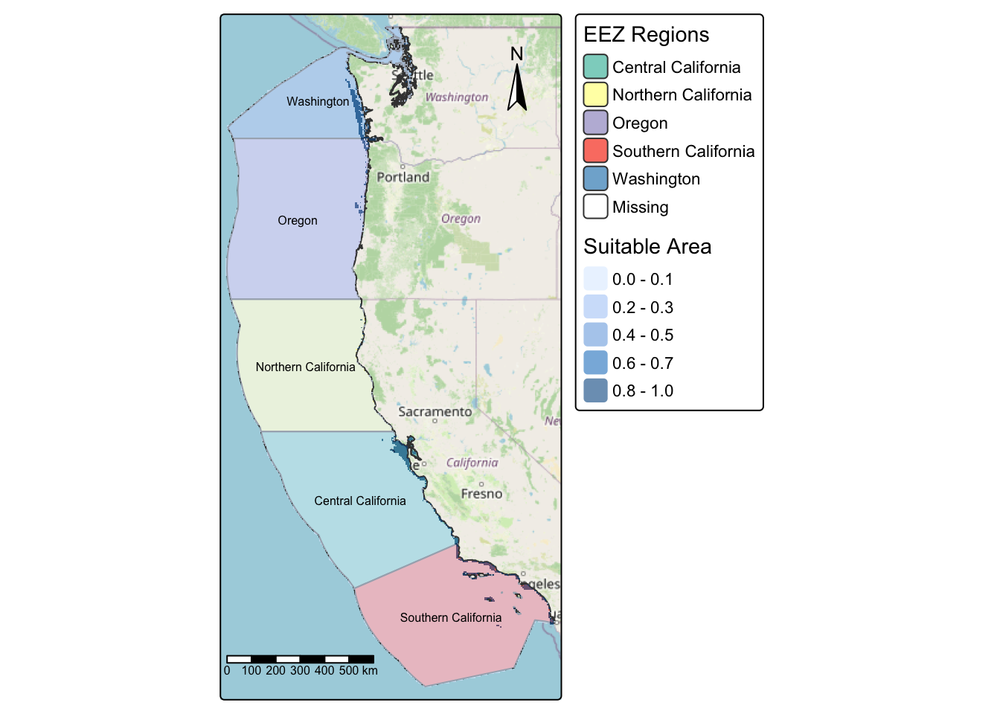
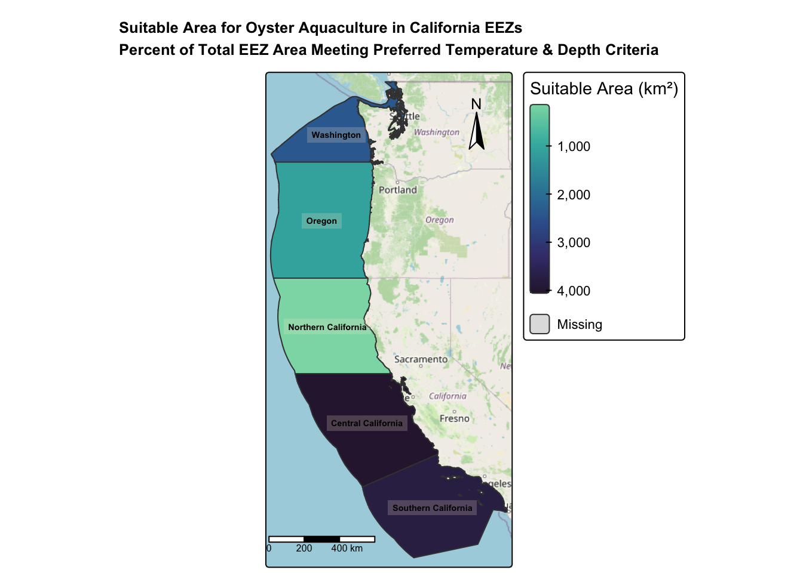
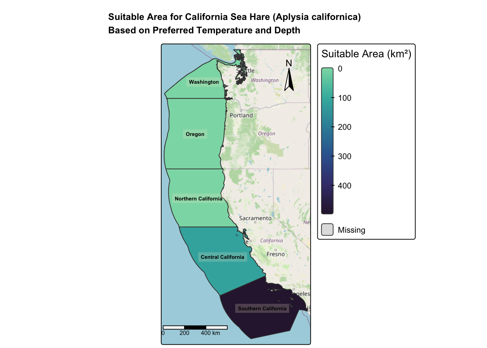
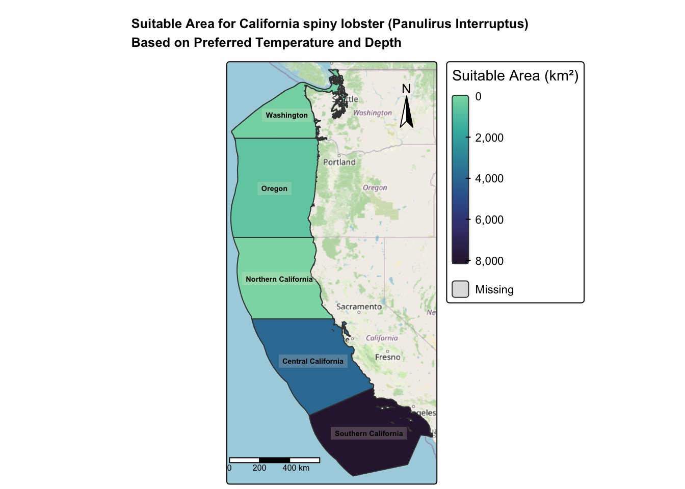

library(tidyverse)
library(sf)
library(terra)
library(dismo)
library(tmap)
library(here)
library(knitr)
library(kableExtra)
library(dplyr)Background
As a more sustainable source of protein than land-based meat production, marine aquaculture has the potential to significantly contribute to the world’s food supply2.One Based on a number of limitations, such as ship traffic, dissolved oxygen, and bottom depth, Gentry et al. projected the potential for marine aquaculture worldwide. They discovered that less than 0.015% of the world’s ocean area could be used to meet the demand for seafood.3
Data Access
All data can be downloaded via this google drive, provided by Ruth Oliver on EDS 223- Homework Assignment 4- Prioritizing potential aquaculture: Link
Data Source: Historical sea surface temperature (SST) rasters, bathymetry data, and West Coast EEZ shapefiles to identify suitable habitat for marine species aquaculture.
Sea Surface Temperature
- National Environmental Satellite Data, and Information Service. Coral Reef Watch. NOAA’s 5km Daily Global Satellite Sea Surface Temperature Anomaly v3.1 SST. Data Files, SST rasters:
`average_annual_sst_2008.tif`,`average_annual_sst_2009.tif`,
`average_annual_sst_2010.tif`, `average_annual_sst_2011.tif`, `average_annual_sst_2012.tif`Bathymetry
- General Bathymetric Chart of the Oceans (GEBCO).Depth raster:depth
depth.tif
Exclusive Economic Zones (EEZ)
- Maritime boundaries using EEZ polygons off the west coast of the US. regions:
wc_regions_clean.shp.
Choosing a New Species - Integrate Function
- Find information on species depth and temperature requirements from SeaLife Base for marine aquaculture, a reasonable potential for commerical consumption. SeaLifeBase
Reprository Structure
├── data
│ ├── average_annual_sst_2008.tif
│ ├── average_annual_sst_2009.tif
│ ├── average_annual_sst_2010.tif
│ ├── average_annual_sst_2011.tif
│ ├── average_annual_sst_2012.tif
│ ├── depth.tif
│ └── wc_regions_clean.shp
├── Marine-Aquaculture-West-Coast-EEZ-for-Oysters.Rproj
├── aquaculture-wc-eez.qmd
└── README.mdImporting libraries
These are the libraries that will be used throughout this document.
Import Data
When adding data into folder, make sure to add data folder to .gitignore to avoid attempting to push any large data onto your reprository.
# load raster dataset
# SST Data
avg_08 <- rast(here("blog_post/prioritizing_west_coast_aquaculture_sites/data","average_annual_sst_2008.tif"))
avg_09 <- rast(here("blog_post/prioritizing_west_coast_aquaculture_sites/data","average_annual_sst_2009.tif"))
avg_10 <- rast(here("blog_post/prioritizing_west_coast_aquaculture_sites/data","average_annual_sst_2010.tif"))
avg_11 <- rast(here("blog_post/prioritizing_west_coast_aquaculture_sites/data","average_annual_sst_2011.tif"))
avg_12 <- rast(here("blog_post/prioritizing_west_coast_aquaculture_sites/data","average_annual_sst_2012.tif"))
depth <- rast(here("blog_post/prioritizing_west_coast_aquaculture_sites/data","depth.tif"))
# Reading in Shapefile- EEZ Data
regions <- st_read(here("blog_post/prioritizing_west_coast_aquaculture_sites/data","wc_regions_clean.shp"), quiet = TRUE)Matching CRS for Rasters
Before proceeding with spatial analysis, an important task needed is to check the Coordinate Reference Systems (CRS) match in order to combine or plot together. If any files do not match, a transformation will be needed.
# check and transform coordinate reference systems
if(crs(avg_08) == crs(avg_09)) {
print("Coordinate reference systems match:)")
} else{
warning("Updating coordinate reference systems to match :(")}[1] "Coordinate reference systems match:)"# check and transform coordinate reference systems
if(crs(avg_08) == crs(avg_10)) {
print("Coordinate reference systems match:)")
} else{
warning("Updating coordinate reference systems to match :(")}[1] "Coordinate reference systems match:)"# check and transform coordinate reference systems
if(crs(avg_08) == crs(avg_11)) {
print("Coordinate reference systems match:)")
} else{
warning("Updating coordinate reference systems to match :(")}[1] "Coordinate reference systems match:)"# check and transform coordinate reference systems
if(crs(avg_08) == crs(avg_12)) {
print("Coordinate reference systems match :)")
} else{
warning("Updating coordinate reference systems to match :(")}[1] "Coordinate reference systems match :)"# check and transform coordinate reference systems
if (crs(avg_08) == crs(depth)) {
print("Coordinate reference systems match :)")
} else {
warning("Updating coordinate reference systems to match :(")
# transform raster to match avg_08
depth <- project(depth, crs(avg_08))
print("Depth coordinate reference systems match after transformation :)")
}Warning: Updating coordinate reference systems to match :([1] "Depth coordinate reference systems match after transformation :)"# check and transform coordinate reference systems
if (crs(avg_08) == crs(regions)) {
print("Coordinate reference systems match :)")
} else {
warning("Updating coordinate reference systems to match :(")
# transform raster to match avg_08
regions <- st_transform(regions, crs(avg_08))
print("Regions coordinate reference systems match after transformation :)")
} Warning: Updating coordinate reference systems to match :([1] "Regions coordinate reference systems match after transformation :)"Combine SST rasters into a raster stack
We will combine all the SST data (avg_08-avg_12), after a stack is completed we will convert the temperature from Kelvin to Celsius
# Combining rasters
sst_stack <- c(avg_08, avg_09, avg_10, avg_11, avg_12)
# Mean of all Rasters and Converting temp values K -> °C
sst_mean <- mean(sst_stack) - 273.15
names(sst_mean) <- "sst_mean"Crop, Extent, Resolution
Here we will verify if the SST and depth data have slightly different resolutions, extents, and positions.
# Obtain geographic extent/bounding box of species occurrences
st_bbox(sst_mean) xmin ymin xmax ymax
-131.98475 29.99305 -114.98672 49.98842 # Crop depth to the SST extent
depth_crop <- crop(depth, ext(sst_mean))
# Resample depth to match SST resolution
depth_resampled <- resample(depth_crop, sst_mean, method = "near")
# Check Resolution
if (all(res(sst_mean) == res(depth_resampled))) {
print("Resolutions matche :)")
} else {
print("Fix resolution :(")
}[1] "Resolutions matche :)"# Check Extent
if (all(ext(sst_mean) == ext(depth_resampled))) {
print("Extent matches :)")
} else {
print("Fix Extent :(")
}[1] "Extent matches :)"# Check CRS
if (crs(sst_mean) == crs(depth_resampled)) {
print("CRS matches :)")
} else {
print("Fix CRS :(")
}[1] "CRS matches :)"Find Suitable Locations for Depth and SST
To find suitable locations for marine aquaculture, we’ll need to find locations that are suitable in terms of both SST and depth. This will be done by reclassifying to find suitable locations that satisfy both terms.
- Oysters have optimal growth at depths between 0-70 meters below sea level and between 11-30°C.
# Define the reclassification matrix for SST - sea level
rcl_sst <- matrix(c(-Inf, 11, 0,
11, 30, 1,
30, Inf, 0), ncol = 3, byrow = TRUE)
# Use classify function
reclassified_sst <- terra::classify(sst_mean, rcl = rcl_sst)
# Define the reclassification matrix for Depth
rcl_depth <- matrix(c(-Inf, -70, 0,
-70, 0, 1,
0, Inf, 0), ncol = 3, byrow = TRUE)
# Use classify function
reclassified_depth <- classify(depth_resampled, rcl_depth)
# Combine Oyster and Depth for suitability
suitable <- reclassified_sst * reclassified_depth # Min = 0, Max = 1
# Map it
tm_shape(suitable)+
tm_raster()+
tm_title("Suitability- Depth and Location")+
tm_layout(
legend.outside.position = TRUE)+
tm_scale_bar(position = c(-.01, 0.08)) +
tm_compass(position = c("left", "top"))+
tm_basemap("OpenStreetMap")
In this map we can see our reclassifcation that was made in order to view the depth and location of oysters. This is more of a sanity check to view our progress.
Rasterize, Masking, CellSize, and Zonal
We want to determine the total suitable area within each EEZ in order to rank zones by priority. To do so, we need to find the total area of suitable locations within each EEZ. This will be completed by select suitable cells within West Coast EEZs find area of grid cells and find the total suitable area within each EEZ.
eez_rast <- rasterize(regions,
# template- using extent, resolution, crs
suitable,
# use region column
field = "rgn")
# Mask
suitable_mask <- mask(suitable,regions)
# Cell size
cell_area <- cellSize(suitable_mask, unit = "km")
# Sum suitable area by EEZ
area_by_eez_zonal <- zonal(cell_area * suitable_mask, eez_rast, fun = "sum", na.rm = TRUE) %>%
rename("suitable_area_km2" = area) %>%
mutate(suitable_area_km2 = as.numeric(suitable_area_km2)) %>%
as_tibble() %>%
arrange(desc(suitable_area_km2))
area_by_eez_zonal %>%
mutate(suitable_area_km2 = round(suitable_area_km2, 2)) %>%
kbl(
caption = "Suitable Area by EEZ (km²)",
col.names = c("EEZ Region", "Suitable Area (km²)")
) %>%
kable_classic(full_width = FALSE, html_font = "Arial")| EEZ Region | Suitable Area (km²) |
|---|---|
| Central California | 4069.88 |
| Southern California | 3757.28 |
| Washington | 2378.31 |
| Oregon | 1074.27 |
| Northern California | 178.03 |
Viewing EEZ Regions and Suitable Areas
tm_shape(regions) +
tm_polygons("rgn", palette = "Set3", title = "EEZ Regions", alpha = 1) +
tm_shape(suitable_mask) +
tm_raster(alpha = 0.6, title = "Suitable Area") +
tm_shape(regions) +
# Adding labels
tm_text("rgn", size = 0.5) +
tm_layout(
legend.outside.position = TRUE)+
tm_scale_bar(position = c(-.01, 0.08)) +
tm_compass(position = c("right", "top"))+
tm_basemap("OpenStreetMap")
In this map we are able to see the different regions and suitable areas, but since they are not in the same dataframe it is plotting them as two separate layers. We do not have percentages of suitable areas, we will have to join dataframes in the following step.
Join Dataframes
Joining regions and suitable areas is necessary since we want to extract the percent of suitable areas (km²)
#Set as simple features to conserve geometry
region_sf <- st_as_sf(regions)
# Join zonal data and calculate percentage
eez_sf <- region_sf %>%
left_join(area_by_eez_zonal, by = "rgn") %>%
mutate(perc_area_km2 = (area_km2 / suitable_area_km2) * 100)
# Table
eez_sf %>%
st_drop_geometry() %>%
as_tibble() %>%
dplyr::select(rgn, suitable_area_km2, perc_area_km2) %>%
mutate(
suitable_area_km2 = round(suitable_area_km2, 2),
perc_area_km2 = round(perc_area_km2, 2)
) %>%
kbl(
caption = "Suitable Area and Percentage by EEZ",
col.names = c("EEZ Region", "Suitable Area (km²)", "Percent of Region (%)")
) %>%
kable_classic(full_width = FALSE, html_font = "Arial")| EEZ Region | Suitable Area (km²) | Percent of Region (%) |
|---|---|---|
| Oregon | 1074.27 | 16754.98 |
| Northern California | 178.03 | 92333.75 |
| Central California | 4069.88 | 4981.44 |
| Southern California | 3757.28 | 5505.59 |
| Washington | 2378.31 | 2812.85 |
- The table shows the suitable area for oyster aquaculture across West Coast EEZs. Central California has the largest suitable area at 4,070 km², followed by Southern California with 3,757 km². Washington and Oregon have moderate areas of 2,378 km² and 1,074 km². Northern California has the smallest at 178 km². Overall, the most favorable regions for oyster aquaculture are Central and Southern California.
Map- After joining checking for Oysters along the West Coast
tm_shape(eez_sf) +
tm_polygons(
"suitable_area_km2",
palette = "-mako",
style = "cont",
title = "Suitable Area (km²)"
) +
tm_text(
"rgn",
size = 0.45,
col = "black",
fontface = "bold",
bgcol = "antiquewhite",
bgcol_alpha = 0.2) +
tm_layout(
main.title = "Suitable Area for Oyster Aquaculture in California EEZs\nPercent of Total EEZ Area Meeting Preferred Temperature & Depth Criteria",
main.title.size = 0.8, # Controls title + subtitle size
main.title.fontface = "bold",
legend.outside = TRUE,
legend.outside.position = "right",
component.autoscale = FALSE,
outer.margins = c(0.01, 0.25, 0.01, 0.05)
) +
tm_scale_bar(position = c(-.02, 0.08)) +
tm_compass(
type = "arrow",
position = c("right", "top")
)+
tm_basemap("OpenStreetMap")
In this figure we are able to visually see what the table above mentioned. Overall, the most favorable regions for oyster aquaculture are Central and Southern California. Northern California has the lowest oyster population.
Generalizeable Workflow Function
Important Load in datasets before using function:
- CRS, Extent, Resolution, and Geometry all need to match before using function.
suit_func <- function(
sst_raster,
depth_raster,
eez_sf,
min_sst,
max_sst,
min_depth,
max_depth,
species_name
) {
# Reclassify Depth
rcl_depth <- matrix(c(
-Inf, min_depth, 0,
min_depth, max_depth, 1,
max_depth, Inf, 0
), byrow = TRUE, ncol = 3)
depth_suit <- classify(depth_raster, rcl_depth)
# Reclassify SST
rcl_sst <- matrix(c(
-Inf, min_sst, 0,
min_sst, max_sst, 1,
max_sst, Inf, 0
), byrow = TRUE, ncol = 3)
sst_suit <- classify(sst_raster, rcl_sst)
# Combine Stack
suit_env <- depth_suit * sst_suit
# Mask
suit_mask <- mask(suit_env,regions)
# Rasterize EEZ polygons to match raster grid
eez_rast <- terra::rasterize(eez_sf, suit_mask, field = "rgn")
# Zonal area (km^2)
cell_area <- cellSize(suit_mask, unit = "km")
area_table <- zonal(cell_area * suit_mask, eez_rast, fun = "sum", na.rm = TRUE) %>%
rename("suitable_area_km2_new" = area) %>%
mutate(suitable_area_km2 = as.numeric(suitable_area_km2_new)) %>%
as_tibble() %>%
arrange(desc(suitable_area_km2))
# Join back to EEZ polygons for mapping
eez_joined <- left_join(eez_sf, area_table, by = "rgn")
# Create table
eez_table <- eez_joined %>%
st_drop_geometry() %>%
# to view for each species
as.data.frame() %>%
# select columns to show in figure
dplyr::select(rgn, suitable_area_km2_new) %>%
# rename column
rename(Region = rgn) %>%
# new column
mutate(suitable_area_km2_new = round(suitable_area_km2_new, 2)) %>%
rename("Suitable Area(km²)" = suitable_area_km2_new)
# print
print(eez_table)
# Plot It!
suit_func_map <-
tm_shape(eez_joined) +
tm_polygons(
"suitable_area_km2_new",
palette = "-mako",
style = "cont",
title = "Suitable Area (km²)"
) +
tm_text("rgn",
size = 0.45,
col = "black",
fontface = "bold",
bgcol = "antiquewhite",
bgcol_alpha = 0.2) +
tm_layout(
main.title = paste(
"Suitable Area for", species_name,
"\nBased on Preferred Temperature and Depth"
),
main.title.size = 0.8,
main.title.fontface = "bold",
legend.outside = TRUE,
legend.outside.position = "right",
component.autoscale = FALSE,
outer.margins = c(0.01, 0.25, 0.01, 0.05)
) +
tm_scale_bar(position = c(-.02, 0.08)) +
tm_compass(type = "arrow", position = c("right", "top"))+
tm_basemap("OpenStreetMap")
return(suit_func_map)
}Use Function with a New Species
Aplysia californica, California sea hare -
I was personally interested in the California sea hare, using the SeaLifeBase, I was able to find the depth range and the sea level range, which are the parameters needed for the function above. A map and a table will be produced. - Depth range: 0 - 22 m - Sea Level: 13.4 - 27.1
# California sea hare
suit_func(
sst_raster = sst_mean,
depth_raster = depth_resampled,
eez_sf = eez_sf,
min_sst = 13.4,
max_sst = 27.1,
min_depth = -22,
max_depth = 0,
species_name = "California Sea Hare (Aplysia californica)"
) Region Suitable Area(km²)
1 Oregon 0.00
2 Northern California 0.00
3 Central California 118.79
4 Southern California 499.63
5 Washington 0.00
- The California sea hare Aplysia californica has suitable habitat primarily in Central California (118.79 km²) and Southern California (499.63 km²). No suitable habitat was identified in Oregon, Northern California, or Washington.
Another Species: California spiny lobster (Panulirus Interruptus)
Here I am testing another marine species, California spiny lobster, to test the function and insure it works for another species with the parameters, which occupies habitat between 0-150 meters below sea level and between 12-24°C.
suit_func(
sst_raster = sst_mean,
depth_raster = depth_resampled,
eez_sf = eez_sf,
min_sst = 12,
max_sst = 24,
min_depth = -150,
max_depth = 0,
species_name = "California spiny lobster (Panulirus Interruptus)"
) Region Suitable Area(km²)
1 Oregon 585.03
2 Northern California 0.00
3 Central California 3992.41
4 Southern California 8093.85
5 Washington 175.57
The California spiny lobster (Panulirus Interruptus) has suitable habitat primarily in Southern California (8093.85 km²), Central California (3992.41 km²), Oregon (585.03 km²), and Washington (175.57 km²). No suitable habitat was identified in Northern California.
Overall, we are able to see another species with the function created. We are able to view a map and table that explains the suitable areas along the West Coast of California.
References
Assignment 4: Prioritizing potential aquaculture. EDS 223 – Geospatial Analysis & Remote Sensing, 2025. https://eds-223-geospatial.github.io/assignments/HW4.html. Accessed 13 Nov. 2025.
Hall, S. J., Delaporte, A., Phillips, M. J., Beveridge, M. & O’Keefe, M. Blue Frontiers: Managing the Environmental Costs of Aquaculture (The WorldFish Center, Penang, Malaysia, 2011).︎
Gentry, R. R., Froehlich, H. E., Grimm, D., Kareiva, P., Parke, M., Rust, M., Gaines, S. D., & Halpern, B. S. Mapping the global potential for marine aquaculture. Nature Ecology & Evolution, 1, 1317-1324 (2017).
GEBCO Compilation Group (2022) GEBCO_2022 Grid (doi:10.5285/e0f0bb80-ab44-2739-e053-6c86abc0289c).
Sealifebase. (2025). Aplysia californica (California sea hare). https://www.sealifebase.ca/summary/Aplysia-californica
Sealifebase. (2025). Panulirus interruptus (California spiny lobster). https://www.sealifebase.ca/summary/Panulirus-interruptus
The Water Brothers. (n.d.). Still from an animation of GreenWave’s regenerative ocean farming system [Image]. The Water Brothers. https://thewaterbrothers.ca/
Citation
BibTeX citation:
@online{tolteca2025,
author = {Tolteca, Marie and Tolteca, Marie},
title = {Prioritizing {Aquaculture} {Sites} {Along} the {West}
{Coast}},
date = {2025-12-06},
url = {https://marietolteca00.github.io/blog_post/prioritizing_west_coast_aquaculture_sites},
langid = {en}
}
For attribution, please cite this work as:
Tolteca, Marie, and Marie Tolteca. 2025. “Prioritizing Aquaculture
Sites Along the West Coast.” December 6, 2025. https://marietolteca00.github.io/blog_post/prioritizing_west_coast_aquaculture_sites.